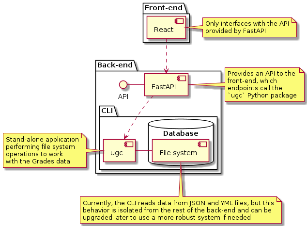

Table of contents
Introduction
Ever since I was introduced to text-based diagrams through UML and more concretely thanks to some fanatic acquaintance who shall remain nameless (else he will turn rufous), I was hooked by their simplicity, flexibility, predictability of presentation and usefulness. While they can be customized up to a point to look a bit better, the goal is really about efficiency. I came to peace with the fact that the final product will often look different from what I’d like to achieve. After all, one of the possible applications of text-based diagrams is to quickly share ideas that can be iterated upon without too much fuss and without slowing down to make things pretty. True, the arrows might not be placed precisely where I’d want them to show up, but the time savings gained by not having to re-arrange boxes and accommodate a canvas are hefty compensation prices! Besides, some tools in that space integrate really well on platforms like GitHub and GitLab without requiring any special piece of software to be produced or viewed, which makes them particularly convenient.
PlantUML: an old love affair
PlantUML has been around for a while — over 12 years at this point! It is a bit cumbersome to use as it requires a server running with Java to do its job. There are good integrations for it though, including a VS Code extension and a Docker image. Its documentation is pretty good and the diagrams are more easily configurable out of the box than with some other similar tools.
Even when starting with an unremarkable use case diagram such as the following one, ideas can be shared efficiently without having to go to a drawing board.
Actually, the code responsible for generating this diagram is as follows:
@startuml
package Users {
:End User 1: as EndUser1
:End User 2: as EndUser2
:User:
User <|-- EndUser1
User <|-- EndUser2
}
package "End User actions" {
(Escalate a case) as UC1
(Mark a case solved) as UC2
(Communicate with fellow citizens) as UC3
}
EndUser1 -- UC3
EndUser2 -- UC3
note bottom of UC1 : Under specific conditions,\ne.g. after X amount of time
@enduml
While this may look like an unfamiliar syntax at first, it is concise, expressive and can be used for many types of UML diagrams. For instance, to take a different use case a notch further, it is not much work:
@startuml
package Users {
:Admin:
:End User: as EndUser
:User:
}
package "Admin actions" {
(Identify users) as UC1
(Forward complaints) as UC2
(Give status update) as UC3
(Mark case solved) as UC4
(Notify by email) as UC5
}
package "End User actions" {
(File a complaint) as UC6
}
User <|-- Admin
User <|-- EndUser
UC1 <-- UC6
UC5 <.. UC2 : << include >>
UC5 <.. UC3 : << include >>
UC5 <.. UC4 : << include >>
EndUser -- UC6
Admin -- UC1
@enduml
Sky is the limit! For example, drawing from scratch the following diagram may start to get messy when done manually:
This is when PlantUML starts to shine as it puts elements in sensible locations without one having to think about it — or endlessly tinker to make them fit on a predefined area. Regardless of the relative visual complexity achieved, the code behind the scenes is still quite understandable and manageable:
@startuml
package Users {
:ISP:
:End User: as EndUser
:Admin:
User <|-- EndUser
User <|-- ISP
User <|-- Admin
}
package "End User actions" {
(File a complaint) as UC1
(Receive update on complaint) as UC9
}
package "Admin actions" {
(Forward complaint to ISP) as UC2
(Receive feedback from ISP) as UC5
(Notify End User of progress on complaint) as UC6
}
package "ISP actions" {
(Receive End User complaint) as UC8
(Reply to End User complaint) as UC3
(Mark complaint solved) as UC4
(Inform Admin) as UC7
}
UC1 --> UC2
UC2 --> UC8
UC3 ..> UC7 : << include >>
UC4 ..> UC7 : << include >>
UC8 <.. UC3 : << extend >>
UC3 <.. UC4 : << extend >>
UC7 --> UC5
UC5 ..> UC6 : << include >>
UC6 --> UC9
Admin -- UC2
EndUser -left- UC1
ISP -- UC8
@enduml
As can be seen, elements can be described on their own (here with a package) and linked together in a clear way (with custom arrows to specify the connection type, length and direction, e.g. -->, <.. or --). Of course, as with any programming task, it helps to adopt pertinent naming conventions…
Beyond use case diagrams, PlantUML is also nice for producing all sorts of outputs, for instance a component diagram (as seen in A retrospective on creating an impractical little tool just for fun):

It can also handle other types of diagrams: sequence; class; activity; state; deployment; network; etc. One other option that I have found useful is its ability to create Gantt charts that are easily programmable! This one, for example, which was used to distribute human resources across a small project done in a computer science degree at the University of London:

Its accompanying code was easy to re-use to cut parts of the diagram into sections that could be presented on their own:
@startuml
' Metadata
hide footbox
title Software Project Proposal — DefineBroadband
footer By Kris, Srijith and Sébastien
printscale weekly
'''''''''''''''''''''''''''''''''''''''''''''''''''''''''''''''''''''''
' Coursework 1
-- Phase 1 --
-- Planning --
Project starts the 2020-11-02
[Discuss project] as [DP] starts 2020-11-02 and ends 2020-11-09
note bottom
Define team rules, project ideation, setting Git, define set of tools, etc.
end note
[Competitor analysis] as [CA] starts 2020-11-16 and ends 2020-11-28
[User survey and results analysis] starts 2020-11-14 and ends 2020-12-04
[Market research] as [MR] starts 2020-11-09 and ends 2020-12-04
[Requirements modelling (UML)] as [RM] starts 2020-12-14 and ends 2020-12-20
[Requirements/Specifications] as [RS] starts 2020-12-04 and ends 2020-12-20
[Proposal writing: Part 1] as [PW1] ends 2021-01-09
[Review process] starts 2021-01-03 and ends 2021-01-09
[RS] --> [PW1]
[DP] --> [MR]
[MR] --> [RS]
-- Development --
[Prototyping design] as [PD0] ends 2021-01-04
[Investigate frameworks and online services] starts 2020-12-16 and ends 2021-01-06
[RS] --> [Prototyping design]
'''''''''''''''''''''''''''''''''''''''''''''''''''''''''''''''''''''''
' Coursework 2
-- Phase 2 --
-- Planning --
[Proposal writing: Part 2] starts 2021-01-13 and ends 2021-03-13
note bottom
Includes report and documentation
end note
[Verification and validation] starts 2021-01-25 and ends 2021-03-13
[Reflections on project] starts 2021-03-01 and ends 2021-03-13
[Final preparation] starts 2021-03-08 and ends 2021-03-13
-- Development --
[Writing software - TDD approach] starts 2021-01-11 and ends 2021-03-13
[Functional testing with users] starts 2021-01-25 and ends 2021-03-13
'''''''''''''''''''''''''''''''''''''''''''''''''''''''''''''''''''''''
-- Development milestones --
[User Database] happens 2021-01-06
[User Registration] happens 2021-01-06
[Landing Site] happens 2021-01-20
[Initial Survey Collection] happens 2021-01-20
[Identifying your location on a map to update the GIS database] happens 2021-01-30
[Message Boards] happens 2021-02-15
[Regulatory Complaint Collection and Forwarding] happens 2021-03-10
'''''''''''''''''''''''''''''''''''''''''''''''''''''''''''''''''''''''
-- Project milestones --
[Prototypes done] happens at [PD0]'s end
[Proposal delivery] as [PD1] happens 2021-01-11
[Project delivery] as [PD2] happens 2021-03-15
[PD2] displays on same row as [PD1]
'''''''''''''''''''''''''''''''''''''''''''''''''''''''''''''''''''''''
' Closed days: holidays
2020-12-24 to 2020-12-25 is closed
2020-12-31 to 2021-01-01 is closed
' Closed days: margins before delivery
2021-01-11 is closed
2021-03-15 is closed
@enduml
It was in fact relatively frictionless to use this diagram as a template for a version 2:
This tool is incredibly awesome, yet it’s not as versatile as it could be. This is mainly due to the fact that while the output can be scaled as needed to get high quality diagrams, its format isn’t supported yet on GitHub (although GitLab does work with it without hassle). For this reason, I’ve looked elsewhere for greener grass and found an alternative for publishing on GitHub.
Mermaid: the new muse
Born roughly 4 years after PlantUML, Mermaid has seen some mesmerizing growth in the open-source world (currently at github.com/mermaid-js/mermaid, it has more than 7 times the number of GitHub stars that PlantUML has!). While I personally enjoy looking at the old-school output produced by PlantUML and have found that diagrams produced by it come out with better spacing and flows on average compared to Mermaid, I like even more the native GitHub support for Mermaid straight from Markdown files (by the way, GitLab supports both PlantUML and Mermaid)! It makes it a powerful tool to use because the diagram is embedded within the Markdown file itself, perfect to keep it under revision while avoiding commits with heavy binary assets.
Mermaid does not support as many diagram types as PlantUML, but it certainly works well for the main ones, which would include flowcharts, sequence diagrams, class diagrams, ER diagrams and Gantt diagrams. Its documentation is less dense and complete than that of PlantUML and diagrams are less customizable without messing around with external CSS files (which can’t be easily linked on every platform), but for the sheer convenience of being able to visualize diagrams from Markdown files on GitHub, it made it easier to switch over. Working locally with it is also a breeze as there is no need to point to a Java installation or have a server running from a Docker container when using, for instance, this VS Code extension.
Mermaid is great for flowcharts, although I have found myself in need of workarounds more often than with PlantUML for sure. For example, the following diagram was relatively painless to come up with:
As can be observed in its source code below, I had some issues with content alignment (plus, label positioning isn’t always optimal as can be seen with a particular ‘Yes‘ in this case). That can often be fixed by changing the orientation of the diagram or by modifying the connection length between rectangles, but still.
flowchart TB
%% Define names
start[Start]
processReport[Process report]
uploadMetadata[Upload metadata]
triggerCloudFunction[Trigger Cloud Function]
convertCSV[Convert CSV to Feather]
lambdaFunctions[Lambda functions]
%% Square ones with single brackets take too much space
newReportQ{{New report?}}
newMetadataQ{{New metadata?}}
reportValidQ{{Is report and is valid?}}
csvFeatherValidQ{{Is metadata and is valid?}}
stop[Stop]
%% Outside subgraphs
start --> lambdaFunctions
uploadMetadata --> start
convertCSV --> start
newReportQ -->|No| stop
newMetadataQ -->|No| stop
reportValidQ -->|No| stop
csvFeatherValidQ -->|No| stop
subgraph AWS
lambdaFunctions --> newReportQ
lambdaFunctions --> newMetadataQ
end
%% Can't align properly without extra spaces...
subgraph                                                       Cloud function
triggerCloudFunction --> csvFeatherValidQ
newReportQ -->|Yes| triggerCloudFunction
newMetadataQ -->|Yes| triggerCloudFunction
triggerCloudFunction --> reportValidQ
end
subgraph VM 1
reportValidQ -->|Yes| processReport
processReport --> uploadMetadata
end
subgraph VM 2
csvFeatherValidQ -->|Yes| convertCSV
end
The syntax is straightforward to follow. Some shapes could take less space (the diamond/rhombus ones in particular), which is why I ended up using hexagonal nodes instead in this example. Overall, the experience is satisfying and makes it so easy to keep iterating and commit multiple versions of the work without taking much disk space at all in the Git repository! Admittedly, I’d rather work with PlantUML for other types of diagrams as I don’t personally use most of the ones Mermaid has to offer (e.g., pie charts, requirement diagrams, git graphs or user journeys) and I prefer the output from PlantUML for the other ones.
One thing I really like about flowcharts in Mermaid is how easy it is to nest graphs, which often increases clarity without making it difficult to create or update:
While this isn’t perfect, it’s good enough to show the architecture of a system at a basic level.
flowchart TB
%% Looping over regions to fetch and update
subgraph LoopOverRegionsUpdate[ ]
%%%% Looping over days within each region
subgraph LoopOverDaysUpdate[2.]
loopDays[Fetch day metadata]
updateRegion[Update region-level locally]
loopDays
-->|then| updateRegion
--> loopDays
end %%%%
fetchRegionMetadata[1. Fetch region metadata]
fetchRegionMetadata
-->|then, loop over days| LoopOverDaysUpdate
--> fetchRegionMetadata
end %%
%% Looping over regions to upload
subgraph loopOverRegionsUpload[ ]
forEachRegion[For each region]
uploadRegion[Upload metadata]
forEachRegion
--> uploadRegion
--> forEachRegion
end %%
%% Setting main node values
start[Automation runs]
spawns[Spawns VM to update metadata]
fetchTopLevelMetadata[Fetch top-level metadata]
updateTop[Update top-level metadata locally]
uploadTop[Upload top-level metadata]
resize[Resize instance group to zero to shut down] %%
%% Fetch and update steps
subgraph fetchAndUpdate[Fetch and update everything locally before uploading back to the bucket]
fetchTopLevelMetadata
-->|then, loop over regions| LoopOverRegionsUpdate
--> updateTop
end
%% Main flow
start
--> spawns
--> fetchAndUpdate
-->|once all processing is done, upload everything| loopOverRegionsUpload
--> uploadTop
--> resize %%
Well, it’s just a matter of taste and in reality, I wouldn’t use either PlantUML or Mermaid for fancier-looking results or for something that would be a real mess to follow textually. For these purposes, I would go with something like Draw.io or Figma, although with the recent acquisition of Figma by Adobe, I might have to switch to another option, like Framer or the promising open-source project Penpot.
When text-based is too clunky
Even though I love the possibilities offered by tools like PlantUML and Mermaid (we didn’t even touch on their theming capabilities!), there are instances where it’s just not as convenient. While it’s possible to do wireframing with PlantUML, there is no way it can compete with some software like Balsamiq on that front. Likewise, it’s going to be difficult to create customized diagrams like the following ones. With Figma, I could create this somewhat original-looking output:
Similarly, I could customize this ER diagram with Draw.io to get something that would be nearly impossible to do with text-based diagrams in terms of presentation:
Conclusion
Text-based diagrams are clearly not a panacea, but neither are they archaic vestiges with no modern use! When they are used for what they are good for — mainly UML diagrams — they get the job done quickly, consistently and appropriately based on UML standards that have been around for eons. They remove friction by not having to think about design and rather allow one to go deeper on the actual links to be created. While I’d often sketch early proposals roughly with pen and paper, I would take the next step in formalizing plans digitally with something like PlantUML or Mermaid. I would then jump from there as needed to other tools that are more flexible but also quite likely more time-consuming to create high-fidelity wireframes or mockups, but the key — in my mind at least — is to remember that different tools have different purposes and it’s nearly always a great idea to use the one best suited for the job.
Resources and references
- Adobe to Acquire Figma
- Balsamiq
- Draw.io
- Figma
- Framer
- github.com/mermaid-js/mermaid
- Markdown Preview Mermaid Support - VS Code extension
- Mermaid
- Penpot
- PlantUML - GitHub
- PlantUML - VS Code extension
- PlantUML integration for GitLab.com
- PlantUML server - DockerHub
- PlantUML
- University of London’s BSc computer science degree
- Wireframing with PlantUML - Salt